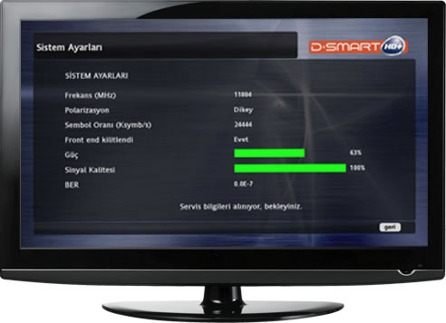

D-SMART KURULUM AYARLARI
D-SMART SİSTEM AYARLARI

1. ADIM
D-Smart uydu alıcınızı ilk kez çalıştırıyorsanız karşınıza “Yeni Kurulum” ekranı gelecektir. Ayarlarınızı kişisel zevkinize göre kumandanızın yön tuşları yardımıyla seçin ve kumandanızın “OK” tuşuna basınız. (Fabrika ayarlarına dönen cihazınızın kurulumu için de aynı adımlarla ilerleyebilirsiniz.)
2. ADIM
Şimdiki adımda Ayar Kontrolü ekranı karşınıza gelecektir. Aşağıdaki tüm kontroller yaptıktan sonra problem yok ve Tek Çanak anten kullanılıyor ise kumandanızdaki “OK” tuşuna basarak devam ediniz.
- Çanak Anten yönü Türksat 3A’ya dönük olmalı,
- Çanak antenden gelen LNB kablosunun uydu alıcısı LNB IN girişine takılı olup olmadığı kontrol edilmeli,
- Smartcard uygun şekilde takılmalı,
- Televizyon ve Uydu alıcısının açık olduğundan emin olunmalıdır.
3. ADIM
Karşınıza Sinyal ayarı ekranı gelecektir. Sinyal ayarları bölümünde sinyal parametreleri yeşile dönüp, sinyal gücü %40 , sinyal kalitesi %100 olduğunda ekran otomatik olarak D-Smart ana sayfaya yönlendirecektir.
4. ADIM
Keyifli Seyirler, D-Smart ailesine Hoşgeldiniz.